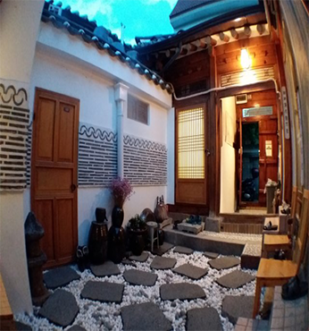

북촌 게스트하우스
- 주소
- 서울특별시 종로구 북촌로 20-17
- 문의
- 010-6711-6717
- 시간
- Check in/out : 21:00/09:30
- 홈페이지
- http://www.bukchon72.com/
북촌 게스트하우스는 안국역 2분거리에 위치해 있습니다.서울 시내 유명 관광지가 10~30분내 자리하고 있어 관광을 위해 지리적으로도 편리한 숙소입니다. 아침에 따뜻한 한식으로 아침식사를 준비해 드리며 한복을 입고 간단하게 사진을 찍으실 수 있는 서비스가 무료입니다.